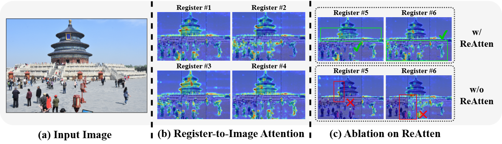

Qualitative Results
Visualization of the register-to-image attention map. As shown in Figure (b), each visual register focuses on specific parts of the image, capturing rich visual patterns. Meanwhile, registers pay minimal attention to background areas, effectively avoiding the inclusion of redundancy. As shown in Figure (c), in the ViT model without ReAtten, the attention patterns across different sub-images appear extremely fragmented. In contrast, the ViT model with ReAtten shows continuous attention patterns, indicating effective information interaction between sub-images.


Case Study on Diverse Tasks. The figures in left illustrate FALCON's exceptional ability to recognize small objects and text in natural scenes, demonstrating its capability to capture rich, fine-grained details in high-resolution images. The figure in right highlights FALCON's proficiency in understanding and summarizing high-resolution document images with dense text, while also demonstrating its sensitivity to small text elements. These examples demonstrate FALCON's remarkable capabilities across various high-resolution vision-language tasks.